📊 Dashboard
Sprint
Race Pace
Quali Pace
Multiclass P2UR
Race Pace
Quali Pace
Multiclass GT3
Race Pace
Quali Pace

🏆 Multiclass P2UR Quali Pace Data
Pace Trend by Round
Pace vs Alien - All Rounds
Driver
Portimao
Le Mans
Interlagos
Monza
Abe Wozniak
102.71
101.99
103.28
101.66
Brian Crane
103.81
102.70
NaN
102.94
Chris MacLennan
105.50
103.56
104.69
102.73
Donovan Bailey
101.68
100.93
100.80
100.84
Greg Kachadurian
101.67
100.85
101.15
101.00
Hans Montes
103.02
103.19
102.97
101.80
James Rubio
103.33
102.54
102.54
101.32
Joris Butkus
NaN
NaN
100.64
NaN
Michael Landry
101.62
100.85
100.93
NaN
Michael Quandt
102.61
NaN
NaN
101.84
Nathan Sides
102.65
NaN
102.30
101.90
Ryan Bellune
103.19
102.06
103.56
NaN
Driver Improvement Comparison
Driver
Best (First 2)
Best (Last 2)
Improvement
James Rubio
102.54
101.32
1.22
Hans Montes
103.02
101.80
1.22
Chris MacLennan
103.56
102.73
0.83
Michael Quandt
102.61
101.84
0.77
Nathan Sides
102.65
101.90
0.75
Abe Wozniak
101.99
101.66
0.33
Donovan Bailey
100.93
100.80
0.13
Michael Landry
100.85
100.93
-0.08
Greg Kachadurian
100.85
101.00
-0.15
Brian Crane
102.70
102.94
-0.24
Ryan Bellune
102.06
103.56
-1.50